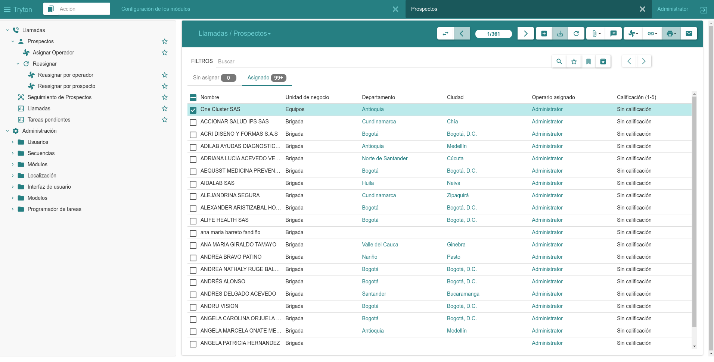

← Go Back
Sale Opportunity Module
Traceability and sales monitoring module to a prospect, focused on
telemarketing

Features
-
Parties Registration
- Prospects
- Contact methods
- Locations
- Related Parties
-
Bulk Assignment of prospects to operators
- By bussiness unit
- By prospect
- By operator
-
Prospect follow-up monitoring
- Sale progress workflow
- Call tracking
- Interest tracking
- Call scheduling
- Pending task scheduling
-
Reporting
- Pending calls
- Pending tasks
- Potential customers
- Work completed per operator
Technologies Used
- Python
- PostgreSQL
- Tryton
- Docker
- Ruby
- Git